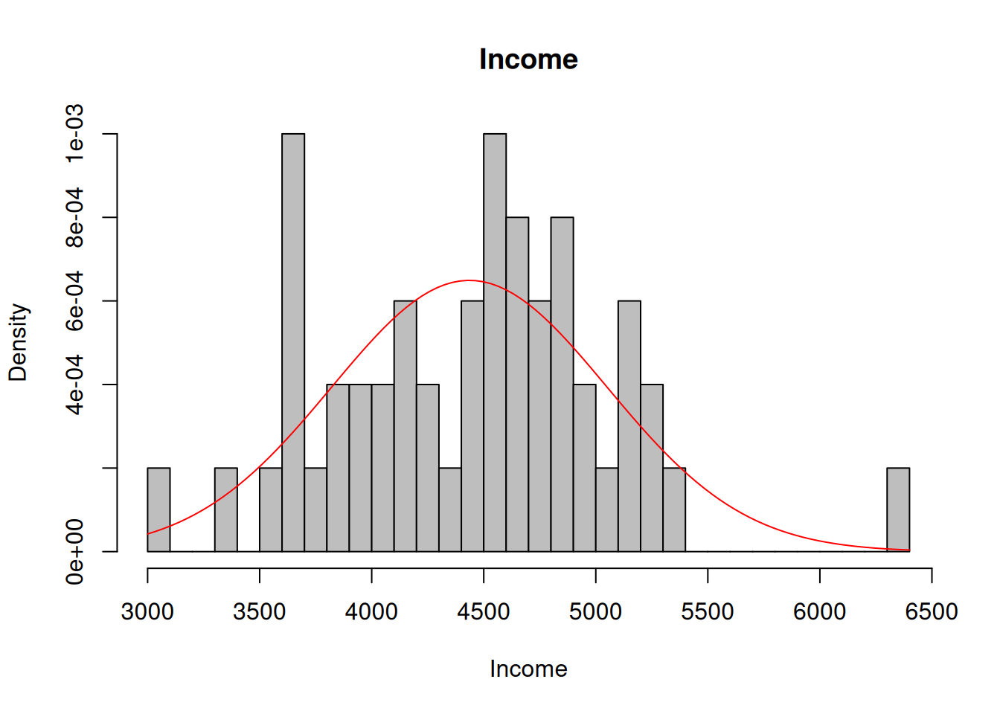
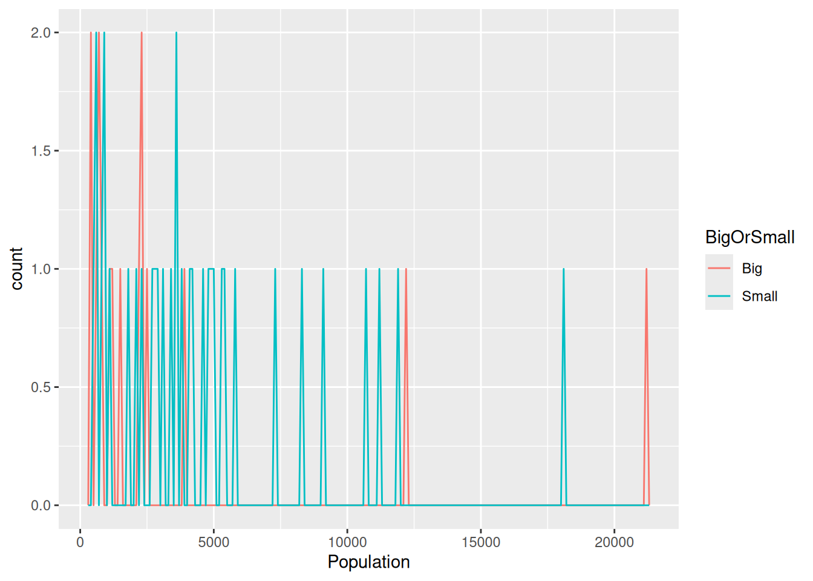
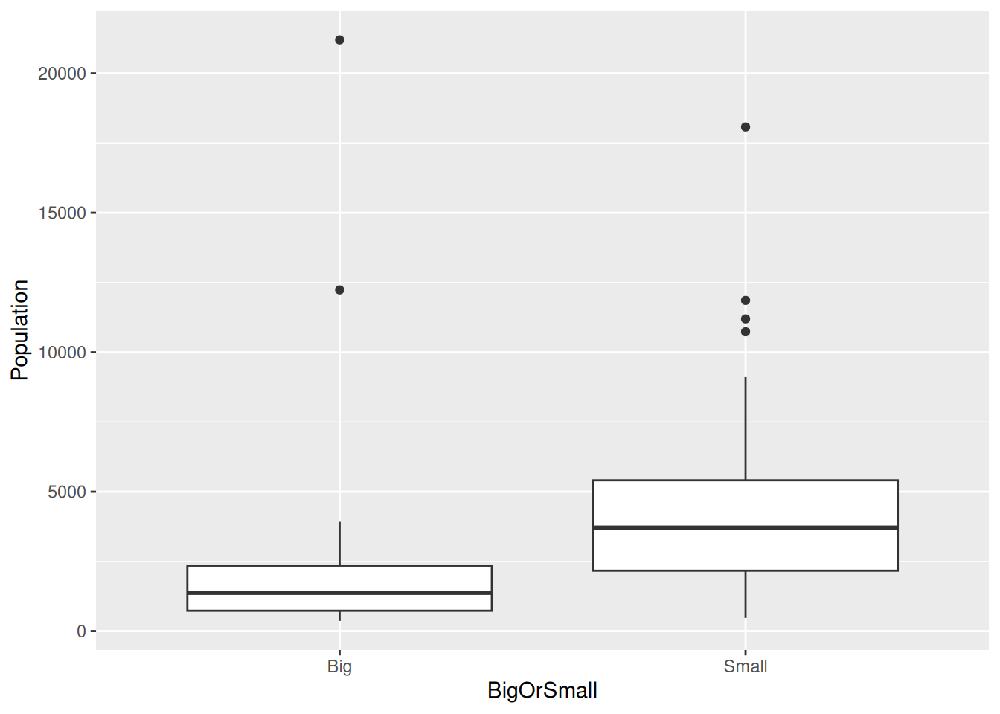
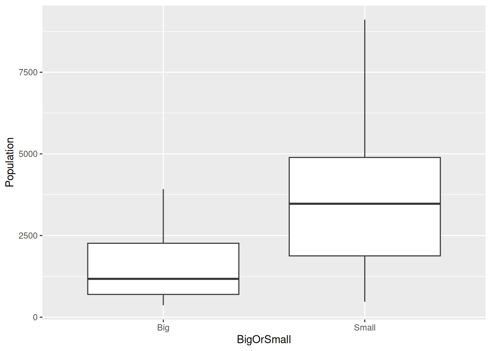

plot(cars)
This is an R Markdown Notebook. When you execute code within the notebook, the results appear beneath the code.
Try executing this chunk by clicking the Run button within the chunk or by placing your cursor inside it and pressing Cmd+Shift+Enter.
plot(cars)
Add a new chunk by clicking the Insert Chunk button on the toolbar or by pressing Cmd+Option+I.
When you save the notebook, an HTML file containing the code and output will be saved alongside it (click the Preview button or press Cmd+Shift+K to preview the HTML file).
The preview shows you a rendered HTML copy of the contents of the editor. Consequently, unlike Knit, Preview does not run any R code chunks. Instead, the output of the chunk when it was last run in the editor is displayed.
Loading packages we need today
library(tidyverse)── Attaching core tidyverse packages ──────────────────────── tidyverse 2.0.0 ──
✔ dplyr 1.1.4 ✔ readr 2.1.5
✔ forcats 1.0.1 ✔ stringr 1.6.0
✔ ggplot2 4.0.0 ✔ tibble 3.3.0
✔ lubridate 1.9.4 ✔ tidyr 1.3.1
✔ purrr 1.2.0
── Conflicts ────────────────────────────────────────── tidyverse_conflicts() ──
✖ dplyr::filter() masks stats::filter()
✖ dplyr::lag() masks stats::lag()
ℹ Use the conflicted package (<http://conflicted.r-lib.org/>) to force all conflicts to become errorslibrary(ggplot2)
library(psych)
Attaching package: 'psych'
The following objects are masked from 'package:ggplot2':
%+%, alpha#If you don't already have these packages, please install first
if (FALSE) {
install.packages("tidyverse")
install.packages("ggplot2")
install.packages("psych")
}Open dataset
d<-as.data.frame(state.x77)
#What does each variable measure?
?state.x77REVIEW for mutate(): Make a new variable by combining two other variables, or transforming a single variable.
Population density = Population/Area
WithDen<-as.data.frame(d%>% mutate(Density = Population/Area))
#OR
d$Density<-d$Population/d$AreaAdd Comments
## Covid Cases by State, 2020-04-03. CDC website.
covid.x2020 <- read.csv("../data/covidCases.csv", header=FALSE)
stat.covid <- data.frame(state.x77,Covid=covid.x2020[[2]], region=state.region)Calculate summary statistics (e.g., Mean, Median, SD, Skewness & Kurtosis statistics) for a variable
mean(d$Income)[1] 4435.8median(d$Income)[1] 4519sd(d$Income)[1] 614.4699skew(d$Income)[1] 0.2046903kurtosi(d$Income)[1] 0.2445701describe(d$Income) vars n mean sd median trimmed mad min max range skew kurtosis
X1 1 50 4435.8 614.47 4519 4430.08 581.18 3098 6315 3217 0.2 0.24
se
X1 86.9describe(stat.covid$Covid) vars n mean sd median trimmed mad min max range skew
X1 1 50 4763.66 13090.24 1408 2308.6 1647.91 147 90279 90132 5.64
kurtosis se
X1 33.56 1851.24stat.covid %>% mutate(CovidDensity = Covid/Area) -> covid1
png("covidCases.png")
hist(covid1$CovidDensity, main="Covid Density by State 2020-04-03",xlab="Covid cases per square mile" )
dev.off()png
2 Calculate summary statistics separately for groups of cases
Wealthy <- d %>%
filter(Income > 4435.8)
NotWealthy <- d %>%
filter(Income < 4435.8)
describe(NotWealthy) vars n mean sd median trimmed mad min
Population 1 21 2907.95 2647.22 2341.00 2484.47 2172.01 472.00
Income 2 21 3855.19 326.41 3875.00 3873.82 372.13 3098.00
Illiteracy 3 21 1.46 0.75 1.60 1.43 1.04 0.50
Life Exp 4 21 70.28 1.35 70.39 70.29 1.53 67.96
Murder 5 21 8.64 3.99 9.70 8.71 4.89 1.70
HS Grad 6 21 48.33 8.81 47.40 47.75 10.82 37.80
Frost 7 21 97.86 50.50 95.00 98.65 51.89 12.00
Area 8 21 66375.00 55741.94 50708.00 56932.94 29337.69 9027.00
Density 9 21 0.06 0.03 0.05 0.06 0.05 0.01
max range skew kurtosis se
Population 12237.00 11765.00 1.98 4.56 577.67
Income 4347.00 1249.00 -0.37 -0.69 71.23
Illiteracy 2.80 2.30 0.07 -1.58 0.16
Life Exp 72.90 4.94 -0.05 -0.97 0.29
Murder 15.10 13.40 -0.17 -1.38 0.87
HS Grad 67.30 29.50 0.42 -1.21 1.92
Frost 174.00 162.00 0.04 -1.28 11.02
Area 262134.00 253107.00 2.08 4.63 12163.89
Density 0.11 0.11 -0.10 -1.42 0.01Make a histogram, adjust the number of bins, and add a normal curve
ggplot(data = d) +
geom_histogram(mapping = aes(x = Income), binwidth = 100) 
#OR
hist(d$Income,breaks = 30,main = "Income", freq=FALSE, col="gray", xlab="Income")
curve(dnorm(x, mean=mean(d$Income), sd=sd(d$Income)), add=TRUE, col="red")
Note that in the call to hist the option freq = FALSE was set so that the histogram would be a on the same density scale as the normal curve (area under all bars adds to 1, not sample size).
Panel histograms by rows according to a grouping variable - Income in geographically bigger vs smaller state Creating a group variable based on area
mean(d$Area)[1] 70735.88d$BigOrSmall<-ifelse(d$Area>=70735.08,"Big","Small")
#Histogram of population based on geographically big vs small state
ggplot(data = d, mapping = aes(x = Population)) +
geom_freqpoly(mapping = aes(colour = BigOrSmall), binwidth = 100)
Make boxplots to compare groups of variables - population in geographically bigger or smaller states
ggplot(data = d, mapping = aes(x = BigOrSmall, y = Population)) +
geom_boxplot()
Remove outliers or groups
NoOutliers<-d
NoOutliers$Population[NoOutliers$Population > 10000] <-NAChecking the boxplots again
ggplot(data = NoOutliers, mapping = aes(x = BigOrSmall, y = Population)) +
geom_boxplot()Warning: Removed 6 rows containing non-finite outside the scale range
(`stat_boxplot()`).
Save your output to a picture file. (jpeg is also possible).
#png file
png("boxplot.png", width = 350, height = 350)
ggplot(data = NoOutliers, mapping = aes(x = BigOrSmall, y = Population)) +
geom_boxplot()Warning: Removed 6 rows containing non-finite outside the scale range
(`stat_boxplot()`).dev.off()png
2 #OR if you would like a PDF export
pdf("boxplot.pdf")
ggplot(data = NoOutliers, mapping = aes(x = BigOrSmall, y = Population)) +
geom_boxplot()Warning: Removed 6 rows containing non-finite outside the scale range
(`stat_boxplot()`).dev.off()png
2 Where did I save this image to?
getwd()[1] "/home/ralmond/ralmond1/Projects/TeachingDemos/RIntro"list.files() [1] "boxplot.pdf" "boxplot.png"
[3] "covidCases.png" "EDAwithGGPlot.qmd"
[5] "ErrorHandling.qmd" "foo.html"
[7] "foo.png" "index.qmd"
[9] "InstallingR.qmd" "MatrixesAndDataFrames.qmd"
[11] "R and R Studio Presentation2.qmd" "RDataStructures.qmd"
[13] "RNotebook_files" "RNotebook.qmd"
[15] "RNotebook.rmarkdown" "TidyStrings.qmd"
[17] "WorkingWithRData.qmd"